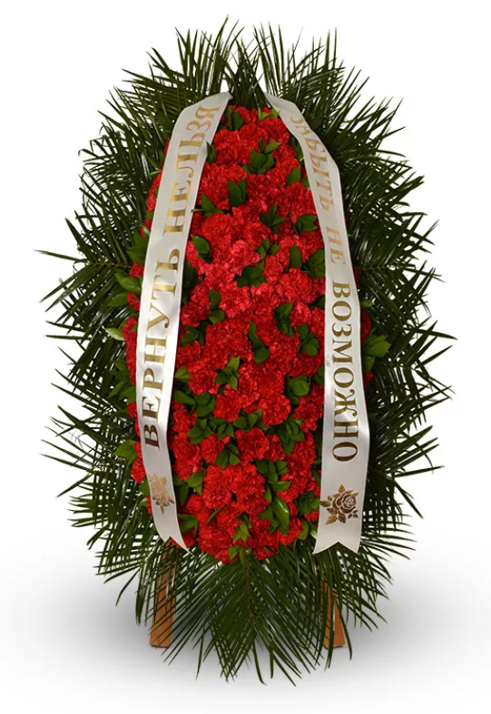

← ко всем венкам
Венок с траурной лентой
Венок с траурной лентой позволяет выразить особые слова памяти и скорби. Лента может быть подписана индивидуально. Такой венок подчеркивает уважение и внимание к ушедшему.
Заказать венок